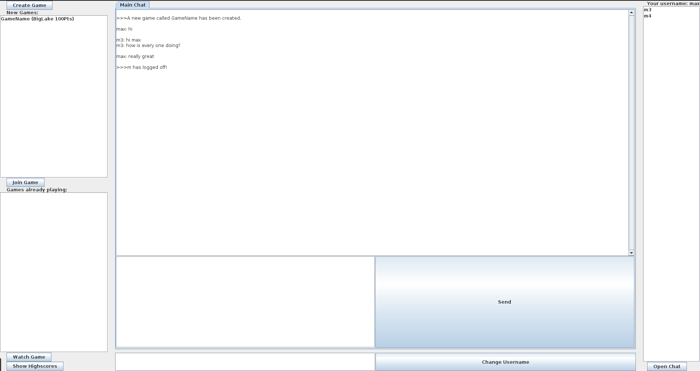

Features
Chat and Wisper Chat
One of the fun features of the WS2017 game is that you can chat with all the other client who have connected to the server additionally it is possible to lead a private conversation with a client by using the wisper chat function.
